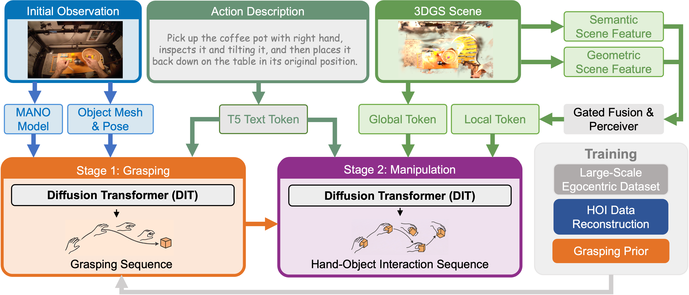

Recent vision-language-action (VLA) models can generate plausible end-effector motions, yet they often fail in long-horizon, contact-rich tasks because the underlying hand-object interaction (HOI) structure is not explicitly represented. An embodiment-agnostic interaction representation that captures this structure would make manipulation behaviors easier to validate and transfer across robots.
We propose FlowHOI, a two-stage flow-matching framework that generates semantically grounded, temporally coherent HOI sequences, comprising hand poses, object poses, and hand-object contact states, conditioned on an egocentric observation, a language instruction, and a 3D Gaussian splatting (3DGS) scene reconstruction. We decouple geometry-centric grasping from semantics-centric manipulation, conditioning the latter on compact 3D scene tokens and a motion–text alignment loss to semantically ground the generated interactions in both the physical scene layout and the language instruction.
To address the scarcity of high-fidelity HOI supervision, we introduce a reconstruction pipeline that recovers aligned hand-object trajectories and meshes from large-scale egocentric videos, yielding an HOI prior for robust generation. Across the GRAB and HOT3D benchmarks, FlowHOI achieves the highest action recognition accuracy and a 1.7× higher physics simulation success rate than the strongest diffusion-based baseline, while delivering a 40× inference speedup. We further demonstrate real-robot execution on four dexterous manipulation tasks, illustrating the feasibility of retargeting generated HOI representations to real-robot execution pipelines.

Given an egocentric observation, a text command, and a 3D scene context, FlowHOI generates hand-object interaction motions through a two-stage pipeline:
"The person grabs the mug from the container and drinks a few sips, then sets it back down on the table, always using their right hand."
"The person picks up the whiteboard eraser with their right hand from the table, uses it to erase markings on the whiteboard, and then places it back on the table in its original position using the same hand."
"The person grabs the cup and drinks, then sets it back down on the table, always using their right hand."
"The person picks up the bottle of ranch dressing from the black platform, using their left hand, pours it onto the plate, then moves it to the right side."
"The person picks up the train with their right hand, passes it to their left hand, investigates it, then rides the train on a track by pushing it through the air with their left hand, and finally puts it down on the table with their left hand."
"The person picks up the mug, toasts it with others across the table, drinks from it, and then places the cup on the table, all with their right hand."
"The person picks up the birdhouse toy from the small round table using their right hand, inspects it briefly while holding it, and then places it back down on the same table with their right hand."
"The person picks up the can of parmesan cheese from the shelf using their right hand, inspects it closely by rotating and examining it with both hands, and then holds it upright in front of them."
"The person picks up the milk carton from the table with their left hand and then pours it."
"The person picks up the flask from the table using their right hand, pours its contents, and then places the flask back onto the original table with right hand."
@article{zeng2026flowhoi,
title = {FlowHOI: Flow-based Semantics-Grounded Generation of Hand-Object Interactions for Dexterous Robot Manipulation},
author = {Zeng, Huajian and Chen, Lingyun and Yang, Jiaqi and Zhang, Yuantai and Shi, Fan and Liu, Peidong and Zuo, Xingxing},
journal = {arXiv preprint arXiv:2602.13444},
year = {2026},
}